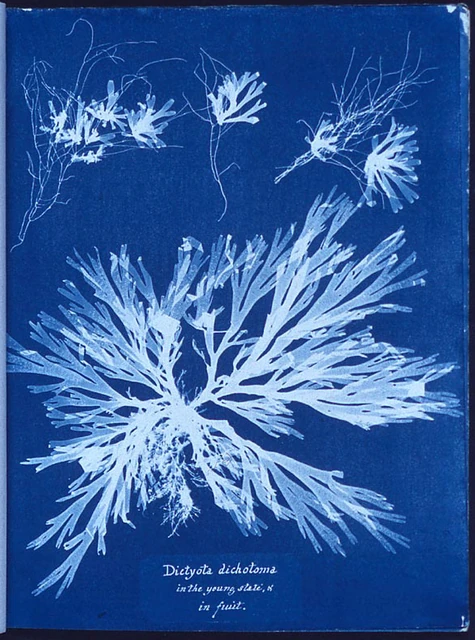

The road
Ink
A drop lands and soaks outward; its ring grows as the square root of time.
Ink in water
Ink floated on water keeps every turn of the current; marbled paper is that water, lifted off.
Layers of water
Ground, current, picture and count, printed one over another; lift them to see each one.

Tide line
Where a liquid stops, it leaves its edge behind: a soak stain's rim, a bloom's border, the wrack on a beach.
Palimpsest
Water washed the first text off the leaf; the trace stayed under the new one.
Light
Earth from six billion kilometres: less than one pixel, caught in a scattered sunbeam inside the camera.
Refraction
Light bends where it enters water; from below, the whole sky squeezes into a circle about 97 degrees across.
Thin film
A soap film a few hundred nanometres thick reflects the colours that meet in step at its thickness; as it drains, the colours walk.
Window
An opening that frames and bends what is seen: the eye, a telescope's dish, a frame within a frame.
Glint
Each flash on the water is one small facet tilted just right between the sun and the eye.
Type
Rub-down letters on a carrier sheet: one face in many sizes, hierarchy from weight and size alone.
Engraving
In intaglio the tone is the lines: more and wider cuts make it darker, and there is no flat fill to lean on.
Erosion
Wear a letter evenly and its hairlines go first; wear it by its own stroke width and the thin parts survive.
Stroke
One continuous mark carried by a hand or a flow: a brush spiral, a burin cut, a line of thick paint that holds its ridges.
Grain
Paper tooth, a worn sort, an uneven inking: the small noise of a medium is part of what it says.
Mosaic
Tesserae laid in courses that follow the form: the flow of the tiles draws the shape before the colour does.
Halftone
Tone from dots of one ink: bigger dots read darker, and a slipped second screen leaves the moiré that says it was printed.
Tile
The unit that carries one piece of the whole: a ribbon tile, a tessera, a glyph cell, one beat of a story.
Joint
The cut between parts lets a whole be taken apart and rebuilt: a grout line, a seam, the turn between premises in an argument.
Grid
A grid holds every cell equal until one mark turns hot; then the eye goes there first.
Sound
Berliner's gramophone cut sound as a groove in a flat disc; a room's echo is the sound still arriving after it stops.
Resonance
Sand on a bowed plate gathers on the lines that stay still; each pitch draws its own figure.
The pad ducks
Two bars of the theme: the pad dips under every kick, so the two never cover each other.
Ring
A closed loop that spreads or holds: a ripple, a drum's nodal circle, an iris, a halo.
The cycle
The theme turns on the flat sixth: the tonic, then the sixth over the same low note, again and again.
Ticker
Edison's ticker printed prices on paper tape as they arrived: data as a ribbon, read in order.
Telegraph
A key, a code and a wire: every message cut into marks and spaces before it could travel.
Grid of time
Time laid out as cells: a contact sheet, a timed study, a fixed half hour that makes the work finish.
Switchboard
An operator joins any line to any other by hand; the tools here do that work for checks, words, sources and code.
Redaction
A redacted page shows exactly where something was taken out; the black bar is a record too.
Argument
Split a claim into premises, presuppositions and a conclusion, and every 'so' and 'but' becomes a turn you can check.
Thread
A line that joins: a sewing thread, a network edge, a rope strand; here, every bridge in the world drawn between its places.
The weighing
In the Papyrus of Hunefer the heart is weighed against a feather and a scribe writes the result down: a check, with a record.